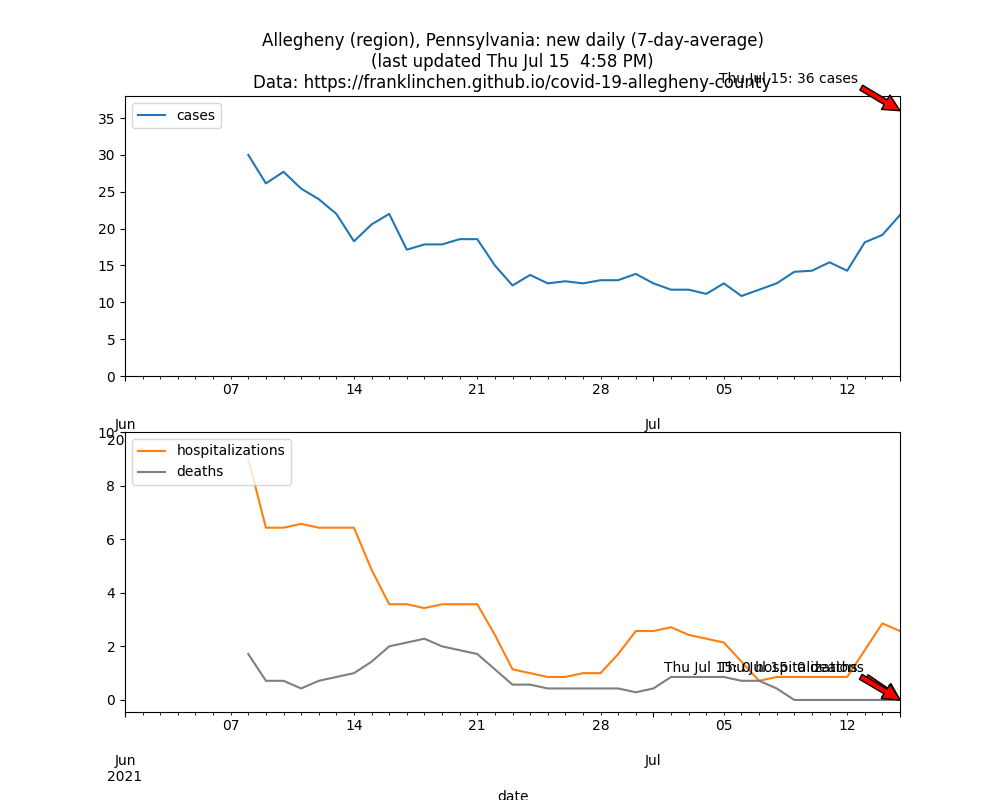
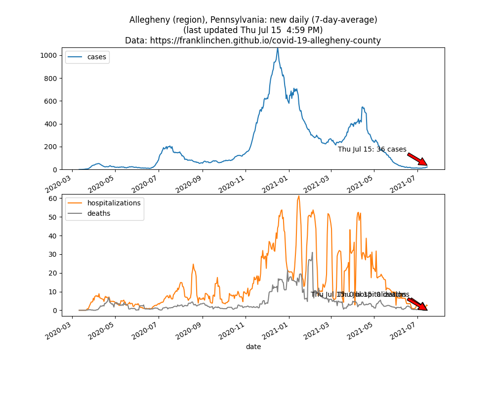
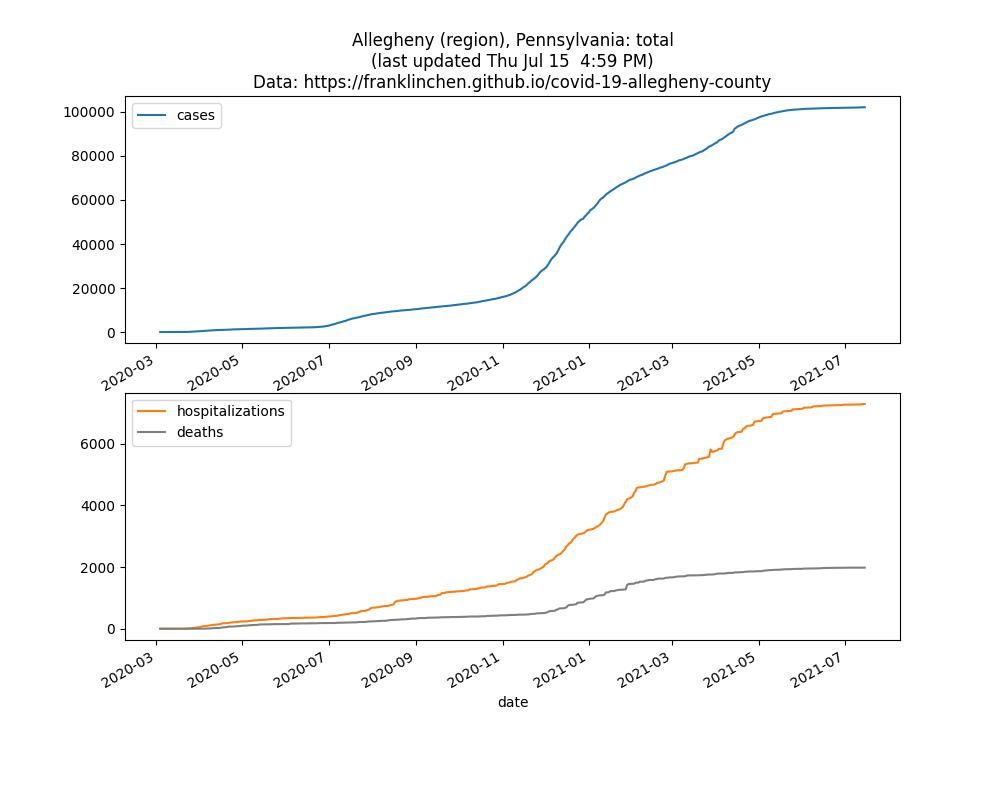

Allegheny County vaccine registration appointment scheduler
More information about how to get vaccinated in Allegheny County.
Also, more information about how to get vaccinated in PA.
You can download and use the official COVID Alert PA mobile app!
There is a PA COVID Inspection Dashboard on businesses that violate COVID requirements.
You may wish to use the PA COVID-19 Early Warning Monitoring System Dashboard Web app to see more data.


